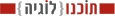

<td-layout #layout>
  <!--class="dark-grey-blue"-->
  <td-navigation-drawer logo="assets:covalent" sidenavTitle="מבט לזמנית" name="מחובר טוביה וייס" email="firstname.lastname@company.com">
    <md-nav-list>
      <template let-item let-last="last" ngFor [ngForOf]="routes">
        <a md-list-item [routerLink]="[item.route]" (click)="layout.close()">
          <md-icon>{{item.icon}}</md-icon>{{item.title}}</a>
      </template>
    </md-nav-list>
    <md-nav-list td-navigation-drawer-menu>
      <a md-list-item (click)="logout()">
        <md-icon>exit_to_app</md-icon>Sign out</a>
    </md-nav-list>
  </td-navigation-drawer>

  <td-layout-nav toolbarTitle="מבט לזמינות החדשה" logo="svgIconName" icon="visibility">
    <div td-toolbar-content>
      <button md-mini-fab (click)="openDialog();" style="margin: 8px;">
    <md-icon>add</md-icon>
  </button>
    </div>
    <router-outlet></router-outlet>

    <td-layout-footer>
      <!--<div  style=" background-image:url('../assets/TochnoLogiaLogo.gif');background-repeat: no-repeat;background-position: right;"></div>-->
      
    </td-layout-footer>
  </td-layout-nav>

</td-layout>